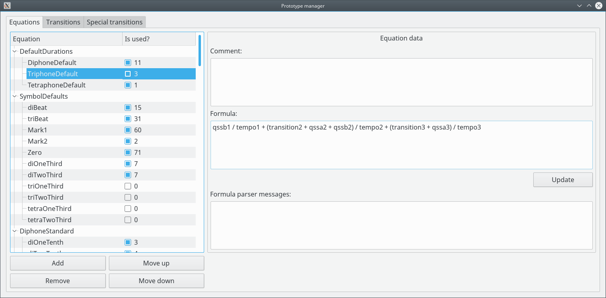

Prototype manager - equations

Equations are used to calculate times from the values of Posture symbols. Qssa1 is the value of qssa for the Posture 1, qssa2 is the value for Posture 2, and so on. Equations can use constant times too (in milliseconds), if needed.
The column "Is used?" is read-only and indicates if the Equation is being used and how many times it is referenced.
Operations:
- Add a group:
Select an item (if the list is not empty) and click on "Add". The name of new group is "___new___" and it is created at the end. - Add an item:
Select a group and click on "Add". The name of new item is "___new___" and it is created at the end of the group. - Rename a group/item:
Double-click on the group/item, change the text and press ENTER. - Remove a group/item:
Select the group or item and click on "Remove". - Move the group/item up:
Select the group or item and click on "Move up". - Move the group/item down:
Select the group or item and click on "Move down". - Add/change the comment:
Select the item, enter the text and click on "Update". - Change the formula:
Select the item, enter the formula and click on "Update".